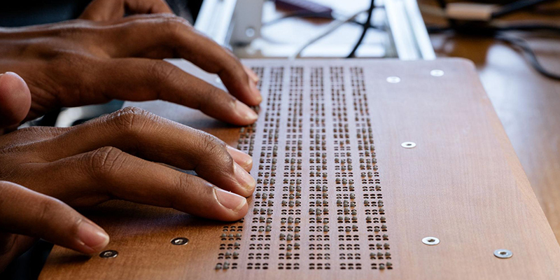
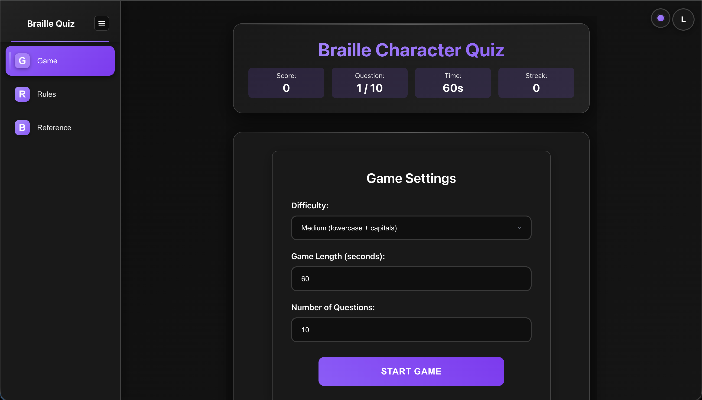
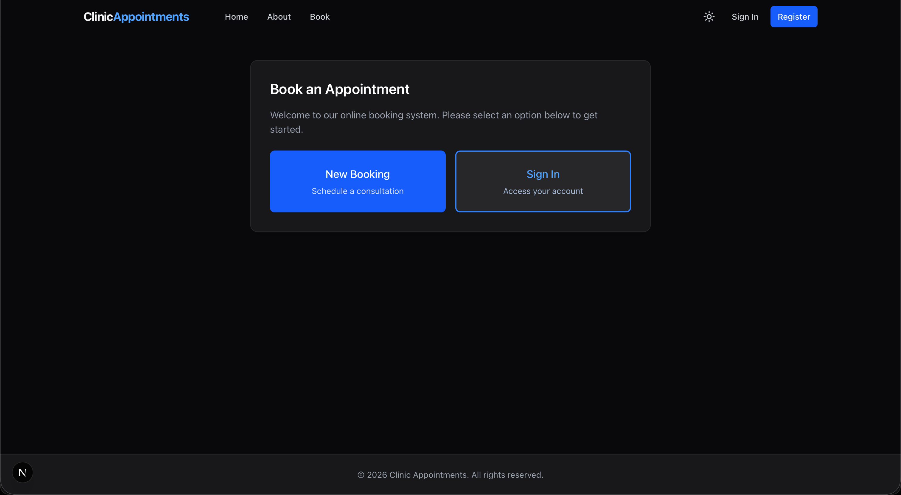
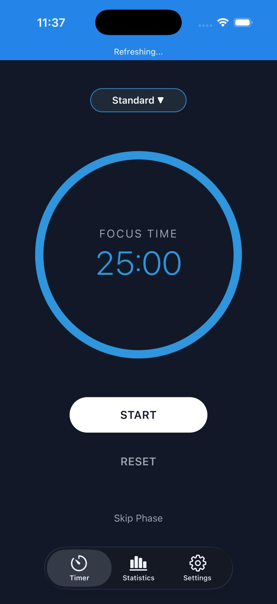

Portfolio
Work Experience
-
Volunteer - Website Support & Management
Mar. 2026 - PresentOcean Connect Remote- Assist with maintaining and updating the Ocean Connect website.
- Ensure information about programs, citizen science initiatives, and events is accurate and up to date.
- Improve website navigation and structure so visitors can easily access key information.
- Support updates to pages, images, and digital content.
- Help strengthen the organisation's digital presence and accessibility for community engagement.
-
Operations Officer
Feb. 2026 - PresentMonash Assistive Technology Team (MATT) Clayton, VIC- Assist in the technical operations of the Monash Assistive Technology Team, supporting delivery of accessibility-focused projects.
- Collaborate with peers to ensure smooth execution of technical initiatives and internal processes.
- Contribute to the effective functioning of the organisation by supporting coordination, communication, and operational workflows.
-
Tactile Display Project Coordinator
Aug. 2025 - PresentMonash Assistive Tech Team (MATT) Clayton, VIC- Lead collaboration with academic supervisor to define project goals and strategies for developing low-cost tactile and refreshable braille displays (MagnePins).
- Guide and coordinate team of project officers in brainstorming and innovation for accessibility technology.
- Conduct user interviews and design surveys to gather insights for user-centred development.
- Lead development of React Native mobile application to support the Tactile Display project.
- Received 90%+ positive reviews from team members for effective leadership and communication.
-
Tactile Display Project Officer
Mar. 2025 - Aug. 2025Monash Assistive Tech Team (MATT) Clayton, VIC- Collaborated with academic supervisor and fellow officers to brainstorm accessibility solutions.
- Assisted in design, development, and testing of tactile display components for blind and low-vision users.
-
Private Mathematics Tutor
Nov. 2024 - March 2025Self-Employed Wantirna South, VIC- Delivered customised Year 7-10 mathematics lessons, adapting content to individual student learning styles.
- Managed scheduling and planning of tutoring sessions, strengthening my skills in leadership, time management, and communication.
- Provided ongoing academic support, fostering student confidence and helping them achieve their personal learning goals.
Projects

Ressie
- Built a local-first web app for creating and editing LaTeX resumes through a structured form UI without requiring LaTeX knowledge.
- Implemented a live PDF preview that auto-compiles after typing stops, with a full-screen viewer for distraction-free review.
- Added support for multiple templates including Jake's Resume, Awesome-CV, and an app-adapted Deedy Resume.
- Designed a dashboard workflow for creating, searching, duplicating, pinning, archiving, and tagging resumes with localStorage persistence.
- Prioritised privacy by keeping resume editing in-browser and running compilation on a local backend (localhost) without third-party tracking.

Skill-Issue (Skilliton)
- Built Skill-Issue at UniHack 2026: a peer-to-peer skill exchange platform for university students.
- Implemented AI-powered matching and real-time Skilliton chat using Firebase Genkit and Google Gemini.
- Integrated Firebase Authentication (Email + Google), Firestore, and Storage for complete user/profile flows.
- Added booking workflows with Google Meet link generation and downloadable .ics calendar events.

Personal Portfolio Website
- Develop and maintain my portfolio website for p-jain.dev.
- Deployed on Virtual Private Server (VPS) with custom domain configuration.
- Designed a responsive layout ensuring compatibility across mobile, tablet, and desktop devices.
- Implemented a custom dark/light mode toggle with persistent local storage state management.
- Utilised semantic HTML and accessibility best practices for better screen reader support.

Tactile Display Project
- Contributed to open-source project developing low-cost refreshable braille displays.
- Developed React Native application to interact with Tactile Display.
- Utilised Figma to develop mock prototypes to create an accessible website.

Braille Character Quiz Game
- Developed an interactive web-based game for learning and practising Braille characters.
- Implemented real-time feedback, scoring system, and streak tracking utilising RxJS for reactive state management.
- Designed a modern, responsive, and accessible interface with timed challenges and custom animations.

Appointment Booking System
- Developed a comprehensive appointment scheduling platform initially using PHP and MySQL.
- Modernised the application to a robust Next.js and MongoDB stack for improved scalability and performance.
- Features include real-time slot availability, user authentication, and admin dashboard for intuitive management.

Pomodoro Timer App
- Developed full-featured iOS productivity app with unique liquid animation timer.
- Integrated glassmorphism UI design, ambient sound playback, and haptic feedback.
- Designed modular component architecture with file-based routing and persistent storage.
Certifications
-
AWS Generative AI Applications Professional Certificate
Built expertise in AI fundamentals, prompt engineering, and AI solution architecture using AWS services. Gained hands-on experience with Amazon Bedrock, PartyRock, and responsible AI implementation through practical labs and assessments focused on designing and deploying AI-powered business solutions.
-
Deloitte Australia Technology Job Simulation (2025)
Gained practical experience in technology consulting, analysing client data, and formulating strategic recommendations.
-
Google's Technical Support Fundamentals Certification (Grade: 98.35%)
Solidified my understanding of IT support core concepts, from networking and operating systems to customer service best practices.
-
FreeCodeCamp's Responsive Web Design Certification
Mastered modern responsive web design techniques, building various projects to demonstrate proficiency in HTML/CSS and accessibility.